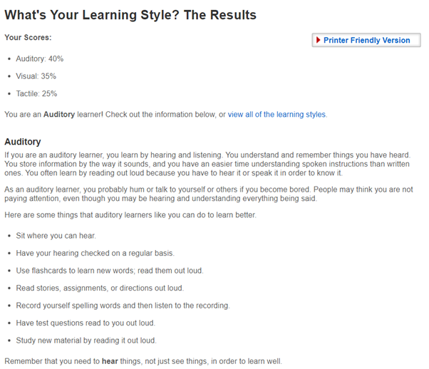

Profile
What do these tests mean for you?
The Myer-Briggs test has categorized me as a “Entertainer” or “ESFP-T” personality type. This personality type is said to be one of extreme socialization in which has no greater joy than that of spending time with a good group of friends, this is honestly extremely accurate to my character, I’m almost perpetually talking to or hanging out with my friends, whether that be in a social outing, or through social media. An ESFP-T is further categorized as someone of a spontaneous nature, which is again very accurate to my character, I love to pop up with an idea out of the blue for an outing and partake in it, that’s not to say I completely avoid planning.
The learning style test has categorized me as an Auditory learning. Someone who understands and processes things easier by hearing the words spoken to them than by doing or reading, this one was honestly surprising to me, as I have always felt that I learn better by doing, by putting myself into an environment in which I don’t have too much experience and learning as I go.
In the Big Five Personality test, I scored highly in Agreeableness showing that I am expected to choose to cooperate with others rather than compete with them, and that I have a great deal of empathy. While scoring low in areas such as openness, This I feel is rather accurate to how I believe myself to be, I find myself often being the type of person who would suppress their own feelings or push them aside to try to help another person to be happy.
In a team setting I don’t see them influencing me too greatly, at least not consciously as I already play into the strengths that have been outlined within these results, being that I often try to encourage communication and clarity within my groups, as well as being as conscious of fellow members feelings, thoughts and ideas to the best I possibly can, unfortunately I do often lack confidence to believe my ideas are of more or equal worth to others that are mentioned but having this brought to light from these results may assist in being more assertive in this regard.
When forming a team I should focus on trying to surround myself with likeminded people who are happy to be outspoken and communicate clearly and openly, as well as those who are able to talk comfortably with topics related to the task as well as those that are not related, as without these types of people I could very possibly feel ostracized and annoying if I’m the only one speaking all the time, or throwing ideas out without anyone seeming like they have any counter argument or constructive additions/takeaways.
